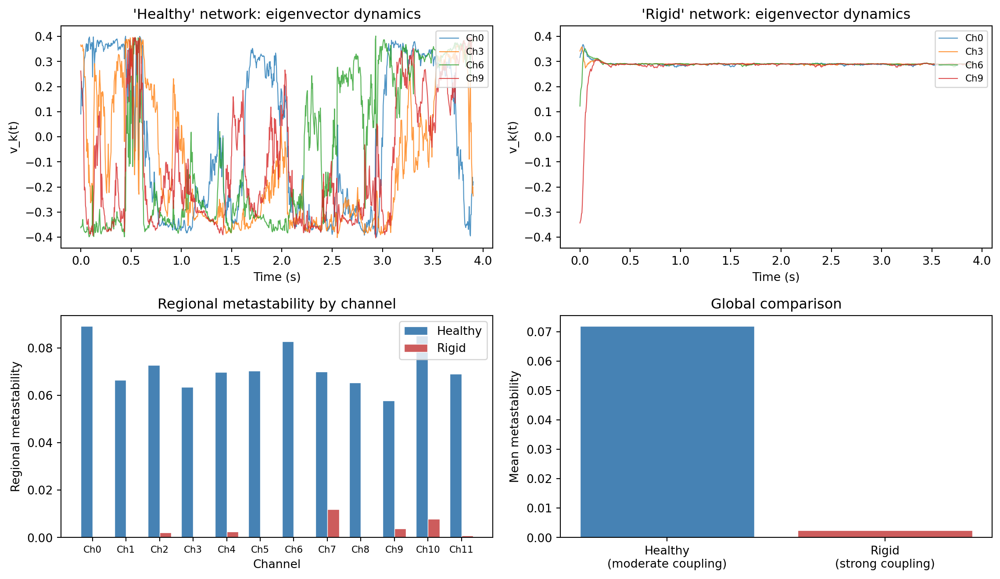

import numpy as np
import matplotlib.pyplot as plt
from scipy.signal import hilbert, butter, filtfilt
np.random.seed(42)
def simulate_network_metastability(n_channels, n_timepoints, coupling_strength,
freq=10, fs=256, noise_std=1.0):
"""Simulate a network and compute regional metastability.
Parameters
----------
n_channels : int
Number of channels.
n_timepoints : int
Number of time points.
coupling_strength : float
How tightly coupled the oscillators are.
freq : float
Natural frequency in Hz.
fs : int
Sampling rate in Hz.
noise_std : float
Standard deviation of phase noise.
Returns
-------
regional_ms : array of shape (n_channels,)
v_dominant : array of shape (n_timepoints, n_channels)
"""
dt = 1 / fs
t = np.arange(n_timepoints) * dt
# Simulate Kuramoto-like phases with all-to-all coupling
phases = np.zeros((n_channels, n_timepoints))
# Random initial phases
phases[:, 0] = np.random.uniform(0, 2 * np.pi, n_channels)
# Slightly different natural frequencies
omegas = 2 * np.pi * (freq + np.random.uniform(-0.5, 0.5, n_channels))
for tp in range(1, n_timepoints):
mean_phase = np.angle(np.mean(np.exp(1j * phases[:, tp - 1])))
for ch in range(n_channels):
coupling_term = coupling_strength * np.sin(mean_phase - phases[ch, tp - 1])
phases[ch, tp] = (phases[ch, tp - 1] +
omegas[ch] * dt +
coupling_term * dt +
noise_std * np.sqrt(dt) * np.random.randn())
# Compute phase alignment matrix and dominant eigenvector
v_dominant = np.zeros((n_timepoints, n_channels))
for tp in range(n_timepoints):
phi = phases[:, tp]
phase_diff = phi[:, None] - phi[None, :]
A = np.cos(phase_diff)
eigenvalues, eigenvectors = np.linalg.eigh(A)
v_dominant[tp] = eigenvectors[:, -1]
# Sign continuity fix
if v_dominant[0, np.argmax(np.abs(v_dominant[0]))] < 0:
v_dominant[0] *= -1
for tp in range(1, n_timepoints):
if np.dot(v_dominant[tp], v_dominant[tp - 1]) < 0:
v_dominant[tp] *= -1
regional_ms = np.var(v_dominant, axis=0)
return regional_ms, v_dominant
# Simulate both networks
n_ch = 12
n_tp = 1000
ms_healthy, v_healthy = simulate_network_metastability(
n_ch, n_tp, coupling_strength=2.0, noise_std=1.5
)
ms_rigid, v_rigid = simulate_network_metastability(
n_ch, n_tp, coupling_strength=15.0, noise_std=0.5
)
# Plot
fig, axes = plt.subplots(2, 2, figsize=(12, 7))
t = np.arange(n_tp) / 256
# Top left: healthy eigenvector dynamics
for ch in [0, 3, 6, 9]:
axes[0, 0].plot(t, v_healthy[:, ch], linewidth=0.8, alpha=0.8, label=f"Ch{ch}")
axes[0, 0].set_title("'Healthy' network: eigenvector dynamics")
axes[0, 0].set_xlabel("Time (s)")
axes[0, 0].set_ylabel("v_k(t)")
axes[0, 0].legend(fontsize=8, loc="upper right")
# Top right: rigid eigenvector dynamics
for ch in [0, 3, 6, 9]:
axes[0, 1].plot(t, v_rigid[:, ch], linewidth=0.8, alpha=0.8, label=f"Ch{ch}")
axes[0, 1].set_title("'Rigid' network: eigenvector dynamics")
axes[0, 1].set_xlabel("Time (s)")
axes[0, 1].set_ylabel("v_k(t)")
axes[0, 1].legend(fontsize=8, loc="upper right")
# Make y-axis limits the same for comparison
y_min = min(axes[0, 0].get_ylim()[0], axes[0, 1].get_ylim()[0])
y_max = max(axes[0, 0].get_ylim()[1], axes[0, 1].get_ylim()[1])
axes[0, 0].set_ylim(y_min, y_max)
axes[0, 1].set_ylim(y_min, y_max)
# Bottom: regional metastability comparison
x = np.arange(n_ch)
width = 0.35
axes[1, 0].bar(x - width/2, ms_healthy, width, label="Healthy", color="steelblue",
edgecolor="white", linewidth=0.5)
axes[1, 0].bar(x + width/2, ms_rigid, width, label="Rigid", color="indianred",
edgecolor="white", linewidth=0.5)
axes[1, 0].set_xlabel("Channel")
axes[1, 0].set_ylabel("Regional metastability")
axes[1, 0].set_title("Regional metastability by channel")
axes[1, 0].set_xticks(x)
axes[1, 0].set_xticklabels([f"Ch{i}" for i in range(n_ch)], fontsize=8)
axes[1, 0].legend()
# Bottom right: summary
axes[1, 1].bar(["Healthy\n(moderate coupling)", "Rigid\n(strong coupling)"],
[np.mean(ms_healthy), np.mean(ms_rigid)],
color=["steelblue", "indianred"], edgecolor="white", linewidth=0.5)
axes[1, 1].set_ylabel("Mean metastability")
axes[1, 1].set_title("Global comparison")
plt.tight_layout()
plt.show()
print(f"Healthy network - mean MS: {np.mean(ms_healthy):.6f}, "
f"range: [{np.min(ms_healthy):.6f}, {np.max(ms_healthy):.6f}]")
print(f"Rigid network - mean MS: {np.mean(ms_rigid):.6f}, "
f"range: [{np.min(ms_rigid):.6f}, {np.max(ms_rigid):.6f}]")
Healthy network - mean MS: 0.071866, range: [0.057746, 0.089247]
Rigid network - mean MS: 0.002436, range: [0.000042, 0.011992]